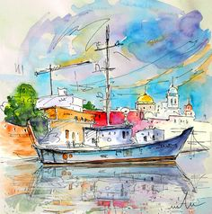
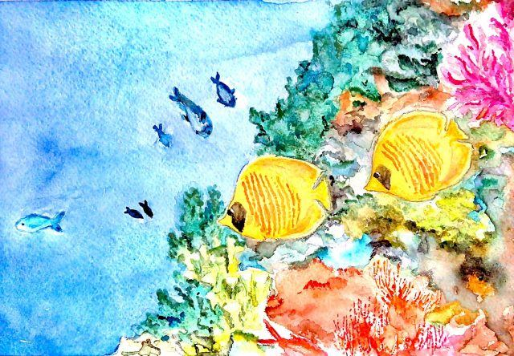
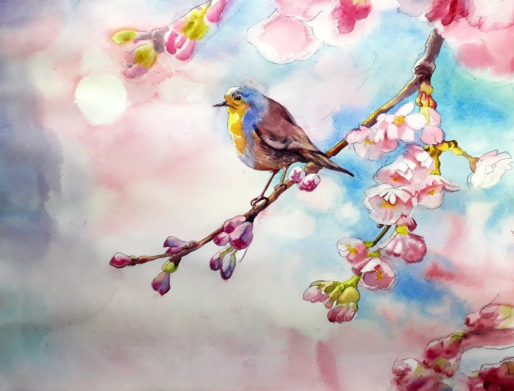
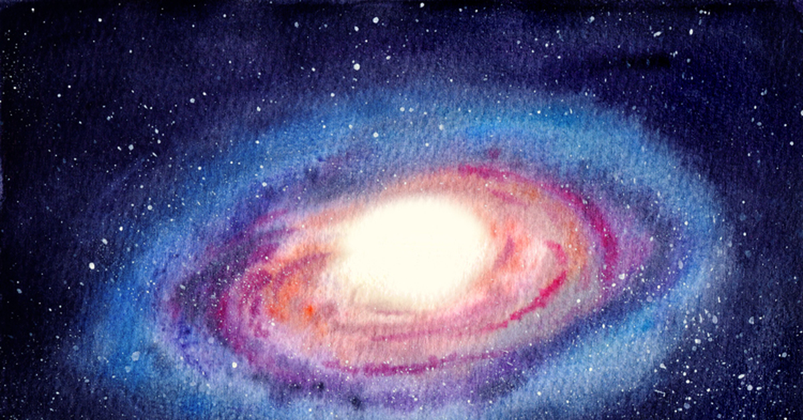

Клуб кинопутешественников
"Где еще не ступала нога, там может побывать воображение и взгляд"
Евгений Витальевич Антонюк
Здесь можно выбрать фильм
Узнать больше о
документальном кино можно
тут
В нашем киноклубе можно выбрать одно из направлений:
| Куда можно отправиться в путешествие? | |
|---|---|
| В любую страну мира |

Этo возможность для тех, кто хочет увидеть то, насколько люди, их быт, города и страны различаются между собой, но в то же время увидеть насколько мы, люди, все-таки едины в главном - в желании быть счастливыми. |
| Назад в прошлое |
Здесь Вы можете отправиться в те далекие времена, когда человек только делал первые шаги как Человек Разумный, или когда он уже покланялся богу Ра и строил пирамиды, а может в те времена, когда он понял, что Земля все-таки круглая и вращается вокруг Солнца, или, возможно, туда, где он уже сам совершил первый полет к звездам. |
| В подводный мир |

Здесь можно погрузиться в мир, который стал колыбелью всего живого на Земле, его обитатели удивительны по форме и размерам, их разнообразие не сможет не поразить. |
| В мир фауны и флоры |

Отправляясь в это путешествие, есть возможность познакомиться с богатым животным и растительным миром нашей огромной планеты, восхититься их удивительной жизнью. |
| В космическую даль |

А здесь можно еще раз убедиться в том, как наш мир велик, в нем есть невообразимо гигантские объекты, такие как планеты, звезды, галактики, воиды и черные дыры, и невообразимо малые частицы, такие как электроны, протоны, кварки, базоны Хиггса и много других удивительных и таинственных вещей. |
| В квантовый мир | |